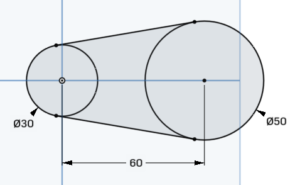

Vamos a crear una pieza algo mas compleja
Proyectos de investigación y desarrollo
Práctica 2
Crear un nuevo boceto y seleccionar plano trabajo
Abra su cuenta en Onshape , en el botón << Crear >>, cree un nuevo documento con el nombre <<Pieza 2>>
1. Crea un nuevo boceto, en el botón << Crear boceto >>.
2. Seleccionamos el plano donde vamos a trabajar, en este caso Top. Haga clic con el botón derecho en el plano de croquis 1 y seleccione << Ver normal al plano de croquis >>.
Dibujamos los círculos
Crea dos círculos , uno centrado en el origen de coordenadas (te puedes ayudar para hacerlo usando la opción de coincidencia) y otro coincidente con el eje X. Si pasas el cursor sobre el centro de cada círculo, verás si coinciden con el eje X y el origen de coordenadas.
Editar diámetros de las circunferencias
Ahora reduzcamos nuestro boceto. Haga clic en << Dimensión >>, luego seleccione la circunferencia. De un diámetro de 30 mm , el otro de 50 mm , y una distancia entre ejes de 60 mm
Trazado línea tangente a dos circunferencias
Dibuja una línea sobre los círculos, separada de ellos.
Vamos a establecer una relación entre estos tres elementos:
Seleccione la línea y un círculo y haga clic en el botón << Tangencia >>.
Repita el paso con el otro círculo.
Ahora hagamos coincidir los puntos inicial y final de la recta con los puntos de tangencia.
1. Haga clic en el punto de inicio de la línea y el primer círculo y luego haga clic en coincidente
2. Repita el paso anterior para el punto final de la línea recta y el segundo círculo
Obtendremos la siguiente figura:
Aplicar simetría
Ahora realizaremos una simetría con respecto a esta línea auxiliar utilizando la herramienta simetría .
Los pasos a seguir son:
1º Haga clic en la herramienta << Espejo >>.
2º Seleccione la línea que usaremos para hacer la simetría (eje X)
3º Seleccione los elementos de nuestro boceto que queremos duplicar (la línea tangente).

NOTA: Si quisiéramos hacer una simetría con respecto a una línea que no es un eje de coordenadas, debemos crear una línea de construcción.
Lo que dibujamos con esta herramienta no influye a la hora de realizar las operaciones de generación de sólidos, simplemente ayudan en el croquis.
Separar los elementos
Vamos a cortar los pedazos de los círculos que sobran con la herramienta cortar (Recortar) , que permite cortar/extender tramos de líneas izquierdas al punto más cercano, introduciendo relaciones de coincidencia entre estos dos puntos.
Este botón tiene tres opciones:
Recortar : Esta primera opción recorta el exceso hasta el punto más cercano que te indiquen.
Extender : Esta segunda opción extiende la línea hasta el punto más cercano indicado.
Dividir : divide la geometría por un punto dado, dando como resultado dos fragmentos geométricos independientes.
Active el botón << Recortar >> y haga clic en las piezas interiores de los círculos.
Extruir
¡Démosle volumen!
Haga clic en el botón << Extruir >>, ahora para ver mejor la extrusión, seleccionamos la perspectiva Trimétrica , haga clic (en el lado derecho de la pantalla) y seleccione Trimétrica .
Seleccione Blind y la flecha hacia arriba. De una profundidad de 30 mm (Profundidad = 30 mm).
Si has seguido el paso a paso del profesor habrás obtenido esta pieza:
En caso contrario puedes regresar al paso en el que te hayas perdido y continuar a partir de ahí, para ello solo debes pulsar ne los botones desplegables
A partir de la pieza que acabas de construir puedes obtener las otras dos, intenta resolver el reto teniendo en cuenta que hay un desplazamiento de 10 mm
¿necesitas ayuda?
Use una nueva herramienta << Desplazamiento >>
Esta herramienta crea perfiles paralelos a los que hacemos nosotros, a una determinada separación, tanto hacia el interior como hacia el exterior.
Primero se selecciona el perfil, luego le damos al icono << Offset >>, e indicamos la dirección y la medida.
¿Redondeamos los bordes?
Una vez que tenemos nuestro sólido inicial, podemos redondear sus bordes con un radio dado.
En el cuadro « Entidades a filetear » seleccionaremos las aristas a redondear.
En el cuadro inferior seleccionaremos el radio del redondeo.
A veces, el redondeo no se puede hacer por razones geométricas; por ejemplo, un borde cuyo lado tiene 3 mm de ancho no se puede redondear con un radio de 10 mm.

Obra publicada con Licencia Creative Commons Reconocimiento No comercial Compartir igual 4.0